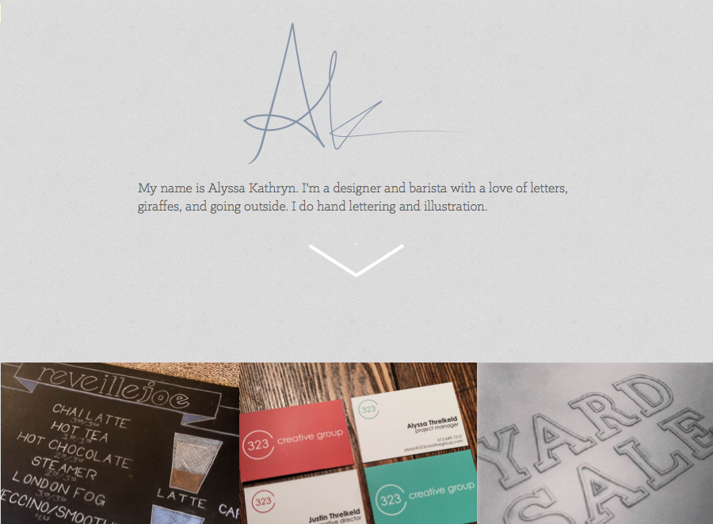

I'm a cross-discipline product designer who likes helping people see daily life in a different way. I specialize in digital design with a focus on putting humans first. I make the world more beautiful and more friendly with things like paper, ink, wax, pixels, bits, and .
For a brief time, I collaborated with a local startup called 323 Creative Group. During this collaboration, I served as creative director and created a visual identity, branding guide, and landing page for the group.
The page is fully responsive, uses CSS3 transitions and has sharp full bleed gradients that randomly load in various colors from the brand guide.
A custom campaign landing page built as part of Lonely Planet's campaign for Mitsubishi Motors. Ajax content, background image carousel, and omniture analytics were just a few of the client's requests.
This project was built using Ruby on Rails and Lonely Planet's UI framework to ensure a design consistent with the core Lonely Planet experience.

Personal Website for Alyssa Kathryn
An artist's portfolio site, featuring large image previews, graceful transitions, and beautiful overlays.
This project was an enjoyable experiment in workflow. Once we had a final design, the entire project was developed in a matter of hours using Grunt, SASS, and Amazon Web Services for low cost deployment.